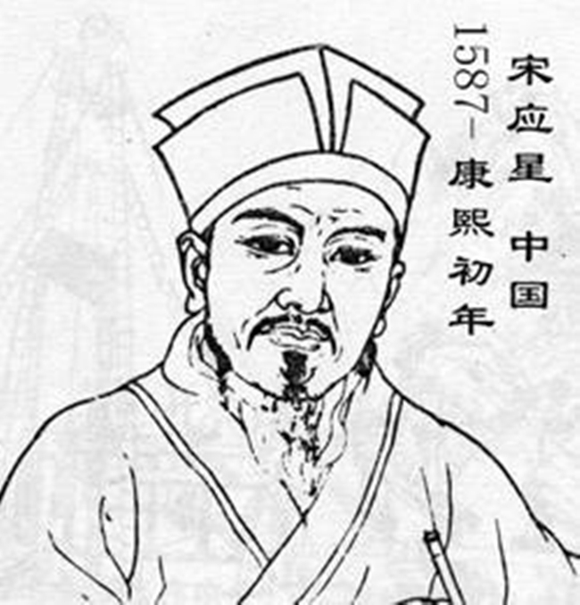

宋应星 - 古代科学家
📜 科学著作：著有《天工开物》，系统记录了中国古代的技术和工艺
📊 农业技术：详细记录了农业生产的各个环节和技术
🌾 工业技术：记录了纺织、冶金、陶瓷等工业技术
📚 百科全书：涵盖了农业、手工业、矿业等多个领域
🌱 科学精神：强调实践和观察，提倡科学精神
宋应星生平时间轴
1587年
宋应星出生
1615年
开始科学研究
1637年
著《天工开物》
1644年
明朝灭亡
1666年
宋应星逝世
您的浏览器不支持视频播放
宋应星生活年代对应历史事件
稻谷综合信息表
分类
详情
稻谷类型
不粘稻谷（名称：亢，产出的米为粳米）
---
粘稻谷（名称：余，产出的米为糯米）
---
晚收带粘性稻谷（名称：粳稻，不能用于酿酒，只能用来煮粥）
稻谷形态
长芒、短芒、长粒、尖粒、圆顶、扁圆
稻米颜色
雪白
牙黄
大赤
半紫
杂黑
您的浏览器不支持视频播放
谷物占比饼图
今天下育民人者，
稻居十七，
而来、牟、黍、稷居十三